ЛАБОРАТОРНАЯ РАБОТА № 3
ИССЛЕДОВАНИЕ ПРОИЗВОДИТЕЛЬНОСТИ
ВЫЧИСЛИТЕЛЬНЫХ СИСТЕМ
Цель работы — изучить существующие способы оценки производительности вычислительных машин и получить базовые навыки сравнения производительности вычислительных машин.
Теоретическая часть
Основу для сравнения различных типов компьютеров между собой дают стандартные методики измерения производительности. В процессе развития вычислительной техники появилось несколько таких стандартных методик. Они позволяют разработчикам и пользователям осуществлять выбор между альтернативами на основе количественных показателей, что дает возможность постоянного прогресса в данной области.
Единицей измерения производительности компьютера является время: компьютер, выполняющий тот же объем работы за меньшее время является более быстрым. Время выполнения любой программы измеряется в секундах. Часто производительность измеряется как скорость появления некоторого числа событий в секунду, так что меньшее время подразумевает большую производительность.
Однако в зависимости от того, что мы считаем, время может быть определено различными способами. Наиболее простой способ определения времени называется астрономическим временем, временем ответа (response time), временем выполнения (execution time) или прошедшим временем (elapsed time). Это задержка выполнения задания, включающая буквально все: работу процессора, обращения к диску, обращения к памяти, ввод/вывод и накладные расходы операционной системы. Однако при работе в мультипрограммном режиме во время ожидания ввода/вывода для одной программы, процессор может выполнять другую программу, и система не обязательно будет минимизировать время выполнения данной конкретной программы.
Производительность определяется количеством вычислительной работы, выполняемой за единицу времени. Поскольку нет единой меры (единиц) для измерения вычислительной работы, отсутствует общепринятая методика оценки производительности. Для количественных оценок используют понятия номинальной и системной производительности.
Номинальной производительностью называют вектор 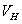
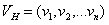
Где νi — быстродействие i-го устройства вычислительной системы.
При оценках чаще всего выделяют устройства: процессор, оперативную память и дисковую память. Номинальная производительность характеризует только потенциальные возможности устройств. При работе в составе системы эти возможности полностью не используются. Степень их использования зависит от характера и количества решаемых задач, интенсивности входного потока задач, операционной системы, выполняющей функции распределения ресурсов системы и организации управления ими. Для характеристики степени использования потенциальных возможностей устройства в составе системы используется показатель загрузки i-го устройства pi:
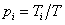
Где Ti — время, в течение которого работало i-е устройство за время T работы системы.
Системная производительность Vc учитывает совместную работу устройств в системе под управлением операционной системы для определённого класса задач:
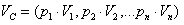
Однако следует учесть, что показатели pi зависят от большого числа факторов, оценка их значений может быть получена на основе статистических данных по результатам моделирования. Получение достоверных оценок весьма затруднительно. Поэтому показатель системной производительности для вычислительных машин используется редко.
Чаще всего показатель производительности требуется не как некоторая величина, измеренная в тех или иных единицах, а как средство для количественного сопоставления производительности различных типов выпускаемых промышленностью вычислительных машин и выбора более быстродействующей, а также для оценки влияния на её производительность вводимых усовершенствований в архитектуре вычислительный машины или системы при комплексировании и разработке. Для этого используется упрощенный подход, основанный на следующих положениях:
1. От абсолютных показателей переходим к относительным. Сравниваем производительность двух вычислительных систем — X, Y. При большем числе альтернативных вариантов (X, Y, Z, ...) одну (например, X) выбираем за базовую и сравниваем попарно X с Y, X с Z и т.д. Определяем относительный показатель k, показывающий, во сколько раз рассматриваемый вариант вычислительной системы производительней базового:
k=< Время испольнения на X >/< Время исполнения на Y >
k=<Производительность Y>/<Производительность X>.
2. Для программ, на которых оценивается производительность, используются:
* реальная программа, имеющая широкое применение (например, компилятор языка программирования C, программы автоматизированного проектирования CAD, ...);
* дро реальной программы;
* “игрушечный” тест объемом порядка 100 строк;
* синтетический тест, содержащий набор реальных программ (каждая содержит 2-10 тыс. строк) из различных областей использования компьютеров (в показателе производительности время выполнения отдельных программ теста учитывается с весовыми коэффициентами).
Для оценки влияния на производительность вносимых в систему усовершенствований (расширения определённых ресурсов) используют подход (закон) Амдаля. Идея подхода заключается в том, чтобы оценку такого комплексного показателя, как относительное увеличение производительности, представить как композицию оценок более простых показателей. Для его применения требуется на основе знаний архитектуры и организации вычислительного процесса оценить два показателя:
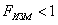
где Fизм — показатель, показывающий, какая часть времени выполнения программы в старой вычислительной системы изменится в новом варианте системы;
s>1,
где s - показатель, показывающий, во сколько раз выделенная показателем Fизм часть работы выполняется быстрее в новом варианте системы по сравнению со старым.
Тогда для оценки относительного уменьшения времени выполнения программы справедливо соотношение
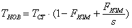
где ТНОВ и ТСТ — время выполнения программы в новой и старой системах соответственно.
Первые два слагаемых оценивают, какая часть работы в новом варианте выполняется по старому. Третье слагаемое оценивает: числитель - какая часть работы выполняется по-новому, знаменатель - во сколько раз эта часть работы выполняется быстрее. С помощью этого соотношения легко оценивается также предельный эффект от введения усовершенствования. Время выполнения программы не может стать меньше, чем ТСТ (1- Fизм).
Для измерения времени работы процессора на данной программе используется специальный параметр — время ЦП (CPU time), которое не включает время ожидания ввода/вывода или время выполнения другой программы. Очевидно, что время ответа, видимое пользователем, является полным временем выполнения программы, а не временем ЦП. Время ЦП может далее делиться на время, потраченное ЦП непосредственно на выполнение программы пользователя и называемое пользовательским временем ЦП, и время ЦП, затраченное операционной системой на выполнение заданий, затребованных программой, и называемое системным временем ЦП.
В ряде случаев системное время ЦП игнорируется из-за возможной неточности измерений, выполняемых самой операционной системой, а также из-за проблем, связанных со сравнением производительности машин с разными операционными системами. С другой стороны, системный код на некоторых машинах является пользовательским кодом на других и, кроме того, практически никакая программа не может работать без некоторой операционной системы. Поэтому при измерениях производительности процессора часто используется сумма пользовательского и системного времени ЦП.
В большинстве современных процессоров скорость протекания процессов взаимодействия внутренних функциональных устройств определяется не естественными задержками в этих устройствах, а задается единой системой синхросигналов, вырабатываемых некоторым генератором тактовых импульсов, как правило, работающим с постоянной скоростью. Дискретные временные события называются тактами синхронизации (clock ticks), просто тактами (ticks), периодами синхронизации (clock periods), циклами (cycles) или циклами синхронизации (clock cycles).Разработчики компьютеров обычно говорят о периоде синхронизации, который определяется либо своей длительностью (например, 10 наносекунд), либо частотой (например, 100 МГц). Длительность периода синхронизации есть величина, обратная к частоте синхронизации.
Таким образом, время ЦП для некоторой программы может быть выражено двумя способами: количеством тактов синхронизации для данной программы, умноженным на длительность такта синхронизации, либо количеством тактов синхронизации для данной программы, деленным на частоту синхронизации.
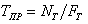
Важной характеристикой, часто публикуемой в отчётах по процессорам, является среднее количество тактов синхронизации на одну команду - CPI (clock cycles per instruction). При известном количестве выполняемых команд в программе этот параметр позволяет быстро оценить время ЦП для данной программы.
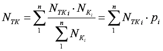
Таким образом, производительность ЦП зависит от трех параметров: такта (или частоты) синхронизации, среднего количества тактов на команду и количества выполняемых команд. Невозможно изменить ни один из указанных параметров изолированно от другого, поскольку базовые технологии, используемые для изменения каждого из этих параметров, взаимосвязаны: частота синхронизации определяется технологией аппаратных средств и функциональной организацией процессора; среднее количество тактов на команду зависит от функциональной организации и архитектуры системы команд; а количество выполняемых в программе команд определяется архитектурой системы команд и технологией компиляторов. Когда сравниваются две машины, необходимо рассматривать все три компоненты, чтобы понять относительную производительность.
В процессе поиска стандартной единицы измерения производительности компьютеров было принято несколько популярных единиц измерения, вследствие чего несколько безвредных терминов были искусственно вырваны из их хорошо определенного контекста и использованы там, для чего они никогда не предназначались. В действительности единственной подходящей и надежной единицей измерения производительности является время выполнения реальных программ, и все предлагаемые замены этого времени в качестве единицы измерения или замены реальных программ в качестве объектов измерения на синтетические программы только вводят в заблуждение.
Опасности некоторых популярных альтернативных единиц измерения (MIPS и MFLOPS) будут рассмотрены в соответствующих подразделах.
Одной из альтернативных единиц измерения производительности процессора (по отношению к времени выполнения) является MIPS — (миллион целочисленных команд в секунду). Имеется несколько различных вариантов интерпретации определения MIPS.
В общем случае MIPS есть скорость операций с целыми числами в единицу времени, т.е. для любой данной программы MIPS есть просто отношение количества команд в программе к времени ее выполнения. Таким образом, производительность может быть определена как обратная к времени выполнения величина, причем более быстрые машины при этом будут иметь более высокий рейтинг MIPS.
Положительными сторонами MIPS является то, что эту характеристику легко понять, особенно покупателю, и что более быстрая машина характеризуется большим числом MIPS, что соответствует нашим интуитивным представлениям. Однако использование MIPS в качестве метрики для сравнения наталкивается на три проблемы. Во-первых, MIPS зависит от набора команд процессора, что затрудняет сравнение по MIPS компьютеров, имеющих разные системы команд. Во-вторых, MIPS даже на одном и том же компьютере меняется от программы к программе. В-третьих, MIPS может меняться по отношению к производительности в противоположенную сторону.
Классическим примером для последнего случая является рейтинг MIPS для машины, в состав которой входит сопроцессор плавающей точки. Поскольку в общем случае на каждую команду с плавающей точкой требуется большее количество тактов синхронизации, чем на целочисленную команду, то программы, используя сопроцессор плавающей точки вместо соответствующих подпрограмм из состава программного обеспечения, выполняются за меньшее время, но имеют меньший рейтинг MIPS. При отсутствии сопроцессора операции над числами с плавающей точкой реализуются с помощью подпрограмм, использующих более простые команды целочисленной арифметики и, как следствие, такие машины имеют более высокий рейтинг MIPS, но выполняют настолько большее количество команд, что общее время выполнения значительно увеличивается. Подобные аномалии наблюдаются и при использовании оптимизирующих компиляторов, когда в результате оптимизации сокращается количество выполняемых в программе команд, рейтинг MIPS уменьшается, а производительность увеличивается.
Другое определение MIPS связано с очень популярным когда-то компьютером VAX 11/780 компании DEC. Именно этот компьютер был принят в качестве эталона для сравнения производительности различных машин. Считалось, что производительность VAX 11/780 равна 1 MIPS (одному миллиону команд в секунду).
В то время широкое распространение получил синтетический тест Dhrystone, который позволял оценивать эффективность процессоров и компиляторов с языка C для программ нечисловой обработки. Он представлял собой тестовую смесь, 53% которой составляли операторы присваивания, 32% — операторы управления и 15% — вызовы функций. Это был очень короткий тест: общее число команд равнялось 100. Скорость выполнения программы из этих 100 команд измерялась в Dhrystone в секунду. Быстродействие VAX 11/780 на этом синтетическом тесте составляло 1757 Dhrystone в секунду. Таким образом 1 MIPS равен 1757 Dhrystone в секунду.
Следует отметить, что в настоящее время тест Dhrystone практически не применяется. Малый объем позволяет разместить все команды теста в кэш-памяти первого уровня современного микропроцессора и он не позволяет даже оценить эффект наличия кэш-памяти второго уровня, хотя может хорошо отражать эффект увеличения тактовой частоты.
Третье определение MIPS связано с IBM RS/6000 MIPS. Дело в том, что ряд производителей и пользователей (последователей фирмы IBM) предпочитают сравнивать производительность своих компьютеров с производительностью современных компьютеров IBM, а не со старой машиной компании DEC. Соотношение между VAX MIPS и RS/6000 MIPS никогда широко не публиковались, но 1 RS/6000 MIPS примерно равен 1.6 VAX 11/780 MIPS.
Измерение производительности компьютеров при решении научно-технических задач, в которых существенно используется арифметика с плавающей точкой, всегда вызывало особый интерес. Именно для таких вычислений впервые встал вопрос об измерении производительности, а по достигнутым показателям часто делались выводы об общем уровне разработок компьютеров. Обычно для научно-технических задач производительность процессора оценивается в MFLOPS (миллионах чисел-результатов вычислений с плавающей точкой в секунду, или миллионах элементарных арифметических операций над числами с плавающей точкой, выполненных в секунду).
Как единица измерения, MFLOPS, предназначена для оценки производительности только операций с плавающей точкой, и поэтому не применима вне этой ограниченной области. Например, программы компиляторов имеют рейтинг MFLOPS близкий к нулю вне зависимости от того, насколько быстра машина, поскольку компиляторы редко используют арифметику с плавающей точкой.
Ясно, что рейтинг MFLOPS зависит от машины и от программы. Этот термин менее безобидный, чем MIPS. Он базируется на количестве выполняемых операций, а не на количестве выполняемых команд. По мнению многих программистов, одна и та же программа, работающая на различных компьютерах, будет выполнять различное количество команд, но одно и то же количество операций с плавающей точкой. Именно поэтому рейтинг MFLOPS предназначался для справедливого сравнения различных машин между собой.
Однако и с MFLOPS не все обстоит так безоблачно. Прежде всего, это связано с тем, что наборы операций с плавающей точкой не совместимы на различных компьютерах. Например, в суперкомпьютерах фирмы Cray Research отсутствует команда деления (имеется, правда, операция вычисления обратной величины числа с плавающей точкой, а операция деления может быть реализована с помощью умножения делимого на обратную величину делителя). В то же время многие современные микропроцессоры имеют команды деления, вычисления квадратного корня, синуса и косинуса.
Другая, осознаваемая всеми, проблема заключается в том, что рейтинг MFLOPS меняется не только на смеси целочисленных операций и операций с плавающей точкой, но и на смеси быстрых и медленных операций с плавающей точкой. Например, программа со 100% операций сложения будет иметь более высокий рейтинг, чем программа со 100% операций деления.
Решение обеих проблем заключается в том, чтобы взять “каноническое” или “нормализованное” число операций с плавающей точкой из исходного текста программы и затем поделить его на время выполнения. Наиболее часто MFLOPS, как единица измерения производительности, используется при проведении контрольных испытаний на тестовых пакетах “Ливерморские циклы” и LINPACK.
Ливерморские циклы — это набор фрагментов фортран-программ, каждый из которых взят из реальных программных систем, эксплуатируемых в Ливерморской национальной лаборатории им.Лоуренса (США). Обычно при проведении испытаний используется либо малый набор из 14 циклов, либо большой набор из 24 циклов.
Пакет Ливерморских циклов используется для оценки производительности вычислительных машин с середины 60-х годов. Ливерморские циклы считаются типичными фрагментами программ численных задач. Появление новых типов машин, в том числе векторных и параллельных, не уменьшило важности Ливерморских циклов, однако изменились значения производительности и величины разброса между разными циклами.
На векторной машине производительность зависит не только от элементной базы, но и от характера самого алгоритма, т.е. коэффициента векторизуемости. Среди Ливерморских циклов коэффициент векторизуемости колеблется от 0 до 100%, что еще раз подтверждает их ценность для оценки производительности векторных архитектур. Кроме характера алгоритма, на коэффициент векторизуемости влияет и качество векторизатора, встроенного в компилятор.
На параллельной машине производительность существенно зависит от соответствия между структурой аппаратных связей вычислительных элементов и структурой вычислений в алгоритме. Важно, чтобы тестовый пакет представлял алгоритмы различных структур. В Ливерморских циклах встречаются последовательные, сеточные, конвейерные, волновые вычислительные алгоритмы, что подтверждает их пригодность и для параллельных машин. Однако обобщение результатов измерения производительности, полученных для одной параллельной машины, на другие параллельные машины или хотя бы некоторый подкласс параллельных машин, может дать неверный результат, ибо структуры аппаратных связей в таких машинах гораздо более разнообразны, чем, скажем, в векторных машинах.
LINPACK — это пакет фортран-программ для решения систем линейных алгебраических уравнений. Целью создания LINPACK отнюдь не было измерение производительности. Алгоритмы линейной алгебры весьма широко используются в самых разных задачах, и поэтому измерение производительности на LINPACK представляют интерес для многих пользователей. Сведения о производительности различных машин на пакете LINPACK публикуются сотрудником Аргоннской национальной лаборатории (США) Дж. Донгаррой и периодически обновляются.
В основе алгоритмов действующего варианта LINPACK лежит метод декомпозиции. Исходная матрица размером 100х100 элементов (в последнем варианте размером 1000х1000) сначала представляется в виде произведения двух матриц стандартной структуры, над которыми затем выполняется собственно алгоритм нахождения решения. Подпрограммы, входящие в LINPACK, структурированы. В стандартном варианте LINPACK выделен внутренний уровень базовых подпрограмм, каждая из которых выполняет элементарную операцию над векторами. Набор базовых подпрограмм называется BLAS (Basic Linear Algebra Subprograms). Например, в BLAS входят две простые подпрограммы SAXPY (умножение вектора на скаляр и сложение векторов) и SDOT (скалярное произведение векторов). Все операции выполняются над числами с плавающей точкой, представленными с двойной точностью. Результат измеряется в MFLOPS.
Использование результатов работы тестового пакета LINPACK с двойной точностью как основы для демонстрации рейтинга MFLOPS стало общепринятой практикой в компьютерной промышленности. При этом следует помнить, что при использовании исходной матрицы размером 100х100, она полностью может размещаться в кэш-памяти емкостью, например, 1 Мбайт. Если при проведении испытаний используется матрица размером 1000х1000, то емкости такого кэша уже недостаточно и некоторые обращения к памяти будут ускоряться благодаря наличию такого кэша, другие же будут приводить к промахам и потребуют большего времени на обработку обращений к памяти. Для многопроцессорных систем также имеются параллельные версии LINPACK и такие системы часто показывают линейное увеличение производительности с ростом числа процессоров.
Однако, как и любая другая единица измерения, рейтинг MFLOPS для отдельной программы не может быть обобщен на все случаи жизни, чтобы представлять единственную единицу измерения производительности компьютера, хотя очень соблазнительно характеризовать машину единственным рейтингом MIPS или MFLOPS без указания программы.
Важность создания пакетов тестов, базирующихся на реальных прикладных программах широкого круга пользователей и обеспечивающих эффективную оценку производительности процессоров, была осознана большинством крупнейших производителей компьютерного оборудования, которые в 1988 году учредили бесприбыльную корпорацию SPEC (Standard Performance Evaluation Corporation). Основной целью этой организации является разработка и поддержка стандартизованного набора специально подобранных тестовых программ для оценки производительности новейших поколений высокопроизводительных компьютеров. Членом SPEC может стать любая организация, уплатившая вступительный взнос.
Основным результатом работы SPEC являются наборы тестов. Эти наборы разрабатываются SPEC с использованием кодов, поступающих из разных источников. SPEC работает над импортированием этих кодов на разные платформы, а также создает инструментальные средства для формирования из кодов, выбранных в качестве тестов, осмысленных рабочих нагрузок. Поэтому тесты SPEC отличаются от свободно распространяемых программ. Хотя они могут существовать под похожими или теми же самыми именами, время их выполнения в общем случае будет отличаться.
В настоящее время имеется два базовых набора тестов SPEC, ориентированных на интенсивные расчеты и измеряющих производительность процессора, системы памяти, а также эффективность генерации кода компилятором. Как правило, эти тесты ориентированы на операционную систему UNIX, но они также импортированы и на другие платформы. Процент времени, расходуемого на работу операционной системы и функции ввода/вывода, в общем случае ничтожно мал.
Набор тестов CINT92, измеряющий производительность процессора при обработке целых чисел, состоит из шести программ, написанных на языке Си и выбранных из различных прикладных областей: теория цепей, интерпретатор языка Лисп, разработка логических схем, упаковка текстовых файлов, электронные таблицы и компиляция программ.
Набор тестов CFP92, измеряющий производительность процессора при обработке чисел с плавающей точкой, состоит из 14 программ, также выбранных из различных прикладных областей: разработка аналоговых схем, моделирование методом Монте-Карло, квантовая химия, оптика, робототехника, квантовая физика, астрофизика, прогноз погоды и другие научные и инженерные задачи. Две программы из этого набора написаны на языке Си, а остальные 12 - на Фортране. В пяти программах используется одинарная, а в остальных — двойная точность.
Результаты прогона каждого индивидуального теста из этих двух наборов выражаются отношением времени выполнения одной копии теста на тестируемой машине к времени ее выполнения на эталонной машине. В качестве эталонной машины используется VAX 11/780. SPEC публикует результаты прогона каждого отдельного теста, а также две составные оценки: SPECint92 — среднее геометрическое 6 результатов индивидуальных тестов из набора CINT92 и SPECfp92 — среднее геометрическое 14 результатов индивидуальных тестов из набора CFP92.
Следует отметить, что результаты тестирования на наборах CINT92 и CFT92 сильно зависят от качества применяемых оптимизирующих компиляторов. Для более точного выяснения возможностей аппаратных средств с середины 1994 года SPEC ввел две дополнительные составные оценки: SPECbase_int92 и SPECbase_fp92, которые накладывает определенные ограничения на используемые компиляторы поставщиками компьютеров при проведении испытаний.
1.4. SPECrate_int92, SPECrate_fp92
Составные оценки SPECint92 и SPECfp92 достаточно хорошо характеризуют производительность процессора и системы памяти при работе в однозадачном режиме, но они совершенно не подходят для оценки производительности многопроцессорных и однопроцессорных систем, работающих в многозадачном режиме. Для этого нужна оценка пропускной способности системы или ее емкости, показывающая количество заданий, которое система может выполнить в течение заданного интервала времени. Пропускная способность системы определяется прежде всего количеством ресурсов (числом процессоров, емкостью оперативной и кэш-памяти, пропускной способностью шины), которые система может предоставить в распоряжение пользователя в каждый момент времени. Именно такую оценку, названную SPECrate и заменившую ранее применявшуюся оценку SPECthruput89, SPEC предложила в качестве единицы измерения производительности многопроцессорных систем.
При этом для измерения выбран метод “однородной нагрузки” (homogenous capacity metod), заключающийся в том, что одновременно выполняются несколько копий одной и той же тестовой программы. Результаты этих тестов показывают, как много задач конкретного типа могут быть выполнены в указанное время, а их средние геометрические значения (SPECrate_int92 — на наборе тестов, измеряющих производительность целочисленных операций и SPECrate_fp92 — на наборе тестов, измеряющих производительность на операциях с плавающей точкой) наглядно отражают пропускную способность однопроцессорных и многопроцессорных конфигураций при работе в многозадачном режиме в системах коллективного пользования. В качестве тестовых программ для проведения испытаний на пропускную способность выбраны те же наборы CINT92 и CFT92.
При прогоне тестового пакета делаются независимые измерения по каждому отдельному тесту. Обычно такой параметр, как количество запускаемых копий каждого отдельного теста, выбирается исходя из соображений оптимального использования ресурсов, что зависит от архитектурных особенностей конкретной системы. Одной из очевидных возможностей является установка этого параметра равным количеству процессоров в системе. При этом все копии отдельной тестовой программы запускаются одновременно, и фиксируется время завершения последней из всех запущенных программ.
С середины 1994 года SPEC ввела две дополнительные составные оценки: SPECrate_base_int92 и SPECrate_base_fp92, которые накладывает ограничения на используемые компиляторы.
По мере расширения использования компьютеров при обработке транзакций в сфере бизнеса все более важной становится возможность справедливого сравнения систем между собой. С этой целью в 1988 году был создан Совет по оценке производительности обработки транзакций (TPC — Transaction Processing Performance Council), который представляет собой бесприбыльную организацию. Любая компания или организация может стать членом TPC после уплаты соответствующего взноса. На сегодня членами TPC являются практически все крупнейшие производители аппаратных платформ и программного обеспечения для автоматизации коммерческой деятельности. К настоящему времени TPC создал три тестовых пакета для обеспечения объективного сравнения различных систем обработки транзакций и планирует создать новые оценочные тесты.
В компьютерной индустрии термин транзакция (transaction) может означать почти любой вид взаимодействия или обмена информацией. Однако в мире бизнеса “транзакция” имеет вполне определенный смысл: коммерческий обмен товарами, услугами или деньгами. В настоящее время практически все бизнес-транзакции выполняются с помощью компьютеров. Наиболее характерными примерами систем обработки транзакций являются системы управления учетом, системы резервирования авиабилетов и банковские системы. Таким образом, необходимость стандартов и тестовых пакетов для оценки таких систем все больше усиливается.
До 1988 года отсутствовало общее согласие относительно методики оценки систем обработки транзакций. Широко использовались два тестовых пакета: Дебет/Кредит и TPI. Однако эти пакеты не позволяли осуществлять адекватную оценку систем: они не имели полных, основательных спецификаций; не давали объективных, проверяемых результатов; не содержали полного описания конфигурации системы, ее стоимости и методологии тестирования; не обеспечивали объективного, беспристрастного сравнения одной системы с другой.
Чтобы решить эти проблемы, и была создана организация TPC, основной задачей которой является точное определение тестовых пакетов для оценки систем обработки транзакций и баз данных, а также для распространения объективных, проверяемых данных в промышленности.
TPC публикует спецификации тестовых пакетов, которые регулируют вопросы, связанные с работой тестов. Эти спецификации гарантируют, что покупатели имеют объективные значения данных для сравнения производительности различных вычислительных систем. Хотя реализация спецификаций оценочных тестов оставлена на усмотрение индивидуальных спонсоров тестов, сами спонсоры, объявляя результаты TPC, должны представить TPC детальные отчеты, документирующие соответствие всем спецификациям. Эти отчеты, в частности, включают конфигурацию системы, методику калькуляции цены, диаграммы значений производительности и документацию, показывающую, что тест соответствует требованиям атомарности, согласованности, изолированности и долговечности (ACID — atomicity, consistency, isolation, and durability), которые гарантируют, что все транзакции из оценочного теста обрабатываются должным образом.
Работой TPC руководит Совет Полного Состава (Full Council), который принимает все решения; каждая компания-участник имеет один голос, а для того, чтобы провести какое-либо решение требуется две трети голосов. Управляющий Комитет (Steering Committee), состоящий из пяти представителей и избираемый ежегодно, надзирает за работой администрации TPC, поддерживает и обеспечивает все направления и рекомендации для членов Совета Полного Состава и Управляющего Комитета.
В составе TPC имеются два типа подкомитетов: постоянные подкомитеты, которые управляют администрацией TPC, осуществляют связи с общественностью и обеспечивают выпуск документации; и технические подкомитеты, которые формируются для разработки предложений по оценочным тестам и распускаются после того, как их работа по разработке завершена.
TPC определяет и управляет форматом нескольких тестов для оценки производительности OLTP (On-Line Transaction Processing), включая тесты TPC-A, TPC-B и TPC-C. Как уже отмечалось, создание оценочного теста является ответственностью организации, выполняющей этот тест. TPC требует только, чтобы при создании оценочного теста выполнялись определенные условия. Хотя упомянутые тесты TPC не являются характерными тестами для оценки производительности баз данных, системы реляционных баз данных являются ключевыми компонентами любой системы обработки транзакций.
Следует отметить, что как и любой другой тест, ни один тест TPC не может измерить производительность системы, которая применима для всех возможных сред обработки транзакций, но эти тесты действительно могут помочь пользователю справедливо сравнивать похожие системы. Однако, когда пользователь делает покупку или планирует решение о покупке, он должен понимать, что никакой тест не может заменить его конкретную прикладную задачу.
1.7. Тест TPC-A
Выпущенный в ноябре 1989 года, тест TCP-A предназначался для оценки производительности систем, работающих в среде интенсивно обновляемых баз данных, типичной для приложений интерактивной обработки данных (OLDP — on-line data processing). Такая среда характеризуется:
1. множеством терминальных сессий в режиме on-line
2. значительным объемом ввода/вывода при работе с дисками
3. умеренным временем работы системы и приложений
4. целостностью транзакций.
Практически при выполнении теста эмулируется типичная вычислительная среда банка, включающая сервер базы данных, терминалы и линии связи. Этот тест использует одиночные, простые транзакции, интенсивно обновляющие базу данных. Одиночная транзакция (подобная обычной операции обновления счета клиента) обеспечивает простую, повторяемую единицу работы, которая проверяет ключевые компоненты системы OLTP.
Тест TPC-A определяет пропускную способность системы, измеряемую количеством транзакций в секунду (tps A), которые система может выполнить при работе с множеством терминалов. Хотя спецификация TPC-A не определяет точное количество терминалов, компании-поставщики систем должны увеличивать или уменьшать их количество в соответствии с нормой пропускной способности. Тест TPC-A может выполняться в локальных или региональных вычислительных сетях. В этом случае его результаты определяют либо “локальную” пропускную способность(TPC-A-local Throughput), либо “региональную” пропускную способность (TPC-A wide Throughput). Очевидно, эти два тестовых показателя нельзя непосредственно сравнивать. Спецификация теста TPC-A требует, чтобы все компании полностью раскрывали детали работы своего теста, свою конфигурацию системы и ее стоимость (с учетом пятилетнего срока обслуживания). Это позволяет определить нормализованную стоимость системы ($/tpsA).
В августе 1990 года TPC одобрил TPC-B, интенсивный тест базы данных, характеризующийся следующими элементами:
1. значительный объем дискового ввода/вывода
2. умеренное время работы системы и приложений
3. целостность транзакций.
TPC-B измеряет пропускную способность системы в транзакциях в секунду (tpsB). Поскольку имеются существенные различия между двумя тестами TPC-A и TPC-B (в частности, в TPC-B не выполняется эмуляция терминалов и линий связи), их нельзя прямо сравнивать.
Тестовый пакет TPC-C моделирует прикладную задачу обработки заказов. Он моделирует достаточно сложную систему OLTP, которая должна управлять приемом заказов, управлением учетом товаров и распространением товаров и услуг. Тест TPC-C осуществляет тестирование всех основных компонентов системы: терминалов, линий связи, ЦП, дискового в/в и базы данных.
TPC-C требует, чтобы выполнялись пять типов транзакций:
1. новый заказ, вводимый с помощью сложной экранной формы
2. простое обновление базы данных, связанное с платежом
3. простое обновление базы данных, связанное с поставкой
4. справка о состоянии заказов
5. справка по учету товаров
Среди этих пяти типов транзакций по крайней мере 43%должны составлять платежи. Транзакции, связанные со справками о состоянии заказов, состоянии поставки и учета, должны составлять по 4%. Затем измеряется скорость транзакций по новым заказам, обрабатываемых совместно со смесью других транзакций, выполняющихся в фоновом режиме.
База данных TPC-C основана на модели оптового поставщика с удаленными районами и товарными складами. База данных содержит девять таблиц: товарные склады, район, покупатель, заказ, порядок заказов, новый заказ, статья счета, складские запасы и история.
Обычно публикуются два результата. Один из них, tpm-C, представляет пиковую скорость выполнения транзакций (выражается в количестве транзакций в минуту). Второй результат, $/tpm-C, представляет собой нормализованную стоимость системы. Стоимость системы включает все аппаратные средства и программное обеспечение, используемые в тесте, плюс стоимость обслуживания в течение пяти лет.
Одной из независимых организаций, осуществляющей оценку производительности вычислительных систем, является частная компания AIM Technology, которая была основана в 1981 году. Компания разрабатывает и поставляет программное обеспечение для измерения производительности систем, а также оказывает услуги по тестированию систем конечным пользователям и поставщикам вычислительных систем и сетей, которые используют промышленные стандартные операционные системы, такие как UNIX и OS/2.
За время своего существования компания разработала специальное программное обеспечение, позволяющее легко создавать различные рабочие нагрузки, соответствующие уровню тестируемой системы и требованиям по ее использованию. Это программное обеспечение состоит из двух основных частей: генератора тестовых пакетов (Benchmark Generator) и нагрузочных смесей (Load Mixes) прикладных задач.
Генератор тестовых пакетов представляет собой программную систему, которая обеспечивает одновременное выполнение множества программ. Он содержит большое число отдельных тестов, которые потребляют определенные ресурсы системы, и тем самым акцентируют внимание на определенных компонентах, из которых складывается ее общая производительность. При каждом запуске генератора могут выполняться любые отдельные или все доступные тесты в любом порядке и при любом количестве проходов, позволяя тем самым создавать для системы практически любую необходимую рабочую нагрузку. Все это дает возможность тестовому пакету моделировать любой тип смеси при постоянной смене акцентов (для лучшего представления реальной окружающей обстановки) и при обеспечении высокой степени конфигурирования.
Каждая нагрузочная смесь представляют собой формулу, которая определяет компоненты требуемой нагрузки. Эта формула задается в терминах количества различных доступных тестов, которые должны выполняться одновременно для моделирования рабочей нагрузки.
Используя эти две части программного обеспечения AIM, можно действительно создать для тестируемой системы любую рабочую нагрузку, определяя компоненты нагрузки в терминах тестов, которые должны выполняться генератором тестовых пакетов. Если некоторые требуемые тесты отсутствуют в составе генератора тестовых пакетов, то они могут быть легко туда добавлены.
Генератор тестовых пакетов во время своей работы “масштабирует” или увеличивает нагрузку на систему. Первоначально он выполняет и хронометрирует одну копию нагрузочной смеси. Затем одновременно выполняет и хронометрирует три копии нагрузочной смеси и т.д. По мере увеличения нагрузки, на основе оценки производительности системы, выбираются различные уровни увеличения нагрузки. В конце концов может быть нарисована кривая пропускной способности, показывающая возможности системы по обработке нагрузочной смеси в зависимости от числа моделируемых нагрузок. Это позволяет с достаточной достоверностью дать заключение о возможностях работы системы при данной нагрузке или при изменении нагрузки.
Очевидно, что сам по себе процесс моделирования рабочей нагрузки мало что дал бы для сравнения различных машин между собой при отсутствии у AIM набора хорошо подобранных смесей, которые представляют собой ряд важных для пользователя прикладных задач.
Все смеси AIM могут быть разделены на две категории: стандартные и заказные. Заказные смеси создаются для точного моделирования особенностей среды конечного пользователя или поставщика оборудования. Заказная смесь может быть тесно связана с определенными тестами, добавляемыми к генератору тестовых пакетов. В качестве альтернативы заказная смесь может быть связана с очень специфическим приложением, которое создает для системы необычную нагрузку. В общем случае заказные смеси разрабатываются на основе одной из стандартных смесей AIM путем ее “подгонки” для более точного представления определенной ситуации. Обычно заказные смеси разрабатываются заказчиком совместно с AIM Technology, что позволяет использовать многолетний опыт AIM по созданию и моделированию нагрузочных смесей.
К настоящему времени AIM создала восемь стандартных смесей, которые представляют собой обычную среду прикладных задач. В состав этих стандартных смесей входят:
Универсальная смесь для рабочих станций (General Workstation Mix) — моделирует работу рабочей станции в среде разработки программного обеспечения. Смесь для механического САПР (Mechanical CAD Mix) моделирует рабочую станцию, используемую для трехмерного моделирования и среды системы автоматизации проектирования в механике. Смесь для геоинформационных систем (GIS Mix) — моделирует рабочую станцию, используемую для обработки изображений и в приложениях геоинформацинных систем. Смесь универсальных деловых приложений (General Business) — моделирует рабочую станцию, используемую для выполнения таких стандартных инструментальных средств, как электронная почта, электронные таблицы, база данных, текстовый процессор и т.д. Многопользовательская смесь (Shared/Multiuser Mix) моделирует многопользовательскую систему, обеспечивающую обслуживание приложений для множества работающих в ней пользователей. Смесь для вычислительного (счетного) сервера (ComputeServer Mix) — моделирует систему, используемую для выполнения заданий с большим объемом вычислений, таких как маршрутизация PCB, гидростатическое моделирование, вычислительная химия, взламывание кодов и т.д. Смесь для файл-сервера (File Server Mix) — моделирует запросы, поступающие в систему, используемую в качестве централизованного файлового сервера, включая ввод/вывод и вычислительные мощности для других услуг по запросу. Смесь СУБД (RBMS Mix) — моделирует систему, выполняющую ответственные приложения управления базой данных. Одним из видов деятельность AIM Technology является выпуск сертифицированных отчетов по результатам тестирования различных систем. В качестве примера рассмотрим форму отчета AIM Performance Report II — независимое сертифицированное заключение о производительности системы.
Ключевыми частями этого отчета являются:
· стоимость системы, детали конфигурации системы, результаты измерения производительности, показанные на трех тестовых пакетах AIM. Используются следующие три тестовых пакета:
· многопользовательский тестовый пакет AIM (набор III), тестовый пакет утилит AIM (Milestone), тестовый пакет для оценки различных подсистем (набор II). В частности, набор III, разработанный компанией AIM Technology, используется в различных формах уже более 10 лет. Он представляет собой пакет тестов для системы UNIX, который пытается оценить все аспекты производительности системы, включая все основные аппаратные средства, используемые в многопрограммной среде. Этот тестовый пакет моделирует многопользовательскую работу в среде разделения времени путем генерации возрастающих уровней нагрузки на ЦП, подсистему ввода/вывода, переключение контекста и измеряет производительность системы при работе с множеством процессов.
Для оценки и сравнения систем в AIM Performance Report II используются следующие критерии:
Пиковая производительность (рейтинг производительности по AIM) Максимальная пользовательская нагрузка Индекс производительности утилит Пропускная способность системы Рейтинг производительности по AIM — стандартная единица измерения пиковой производительности, установленная AIM Technology. Этот рейтинг определяет наивысший уровень производительности системы, который достигается при оптимальном использовании ЦП, операций с плавающей точкой и кэширования диска. Рейтинг вездесущей машины VAX 11/780 обычно составляет 1 AIM. В отчетах AIM представлен широкий ряд UNIX-систем, которые можно сравнивать по этому параметру.
Максимальная пользовательская нагрузка — определяет “емкость” (capacity) системы, т.е. такую точку, начиная с которой производительность системы падает ниже приемлемого уровня для N-го пользователя (меньше чем одно задание в минуту на одного пользователя).
Индекс производительности утилит — определяет количество пользовательских нагрузок пакета Milestone, которые данная система выполняет в течение одного часа. Набор тестов Milestone многократно выполняет выбранные утилиты UNIX в качестве основных и фоновых заданий при умеренных пользовательских нагрузках. Этот параметр показывает возможности системы по выполнению универсальных утилит UNIX.
Максимальная пропускная способность — определяет пиковую производительность мультипрограммной системы, измеряемую количеством выполненных заданий в минуту. Приводящийся в отчете график пропускной способности системы показывает, как она работает при различных нагрузках.
Отчет по производительности разработан с использованием набора тестов AIM собственной разработки. В отличие от многих популярных тестовых пакетов, которые измеряют только производительность ЦП в однозадачном режиме и/или на операциях с плавающей точкой, тестовые пакеты AIM проверяют итоговую производительность системы и всех ее основных компонентов в многозадачной среде, включая ЦП, плавающую точку, память, диски, системные и библиотечные вызовы.
Синтетические ядра и
натуральные тесты не могут служить в качестве настоящих тестовых пакетов для
оценки систем: они не могут моделировать точно среду конечного пользователя и
оценивать производительность всех относящихся к делу компонентов системы. Без
такой гарантии результаты измерения производительности остаются под вопросом.
Практическая часть
УСТАНОВКА SISOFTAWARE SANDRA
Тесты производительности (benchmarks) — это тесты, измеряющие производительность систем, или подсистема на решении заранее определенных задач или наборов задач.
Результаты тестов производительности обычно используются для предсказания производительности незнакомой (не купленной, не установленной) системы при решении (заранее определенных) задач пользователя и для сравнения производительности систем или подсистем для некоторого класса задач.
Тесты производительности также могут быть использованы и при контроле, диагностике и настройке систем для выявления узких мест и плохо работающих (ненастроенных) подсистем.
Тесты производительности чаще всего измеряют обобщенные показатели производительности систем или подсистем, таких как графическая подсистема, подсистема ввода/вывода, процессор (для операций с целыми числами и для операций с числами с плавающей запятой) и т.д., однако, многие тесты измеряют производительность при решении конкретных, но типичных задач, таких как отображение многоугольников, чтение и запись файлов или операции над матрицами.
Каждая организация или подразделение, занимающееся решением своих задач на компьютерах, может (что, в принципе, весьма полезно, если будет сделано грамотно) создать свой набор тестов производительности, которые будут наиболее точно отражать специфику задач, решаемых данным подразделением. Частным случаем такого теста может быть решение реальных задач с фиксированными исходными данными и измерение времени решения. Главный недостаток таких тестов — либо результаты будут известны только для систем, которые доступны авторам, либо авторы должны широко распространить свои тесты и убедить других людей проводить их и публиковать (сообщать) результаты.
В мире существует уже достаточно большой набор разработанных тестов, оценивающих различные аспекты производительности систем и подсистем. Наиболее известные из них: 007 (ODBMS), AIM, Dhrystone, Khornerstone, LFK (Livermore Loops), LINPACK, MUSBUS, NAS Kernels, Nhfsstone, PERFECT, RhosettaStone, SLALOM, SPEC, SSBA, TPC, WPI Benchmark Suite, Whetstone, Xstone, SYSmark, Stanford, IOBENCH, IOZONE, Byte, Netperf, Nettest, Hartstone, EuroBen, Fhourstones, Heapsort, Hanoi, Flops, C LINPACK, TFFTDP, Matrix Multiply (MM), Digital Review.
Производительность вычислительных систем общего назначения оценивается в зависимости от области применения номинальной, комплексной, системной производительностью и производительностью на рабочей нагрузке.
Номинальная производительность характеризует только быстродействие, или производительность устройств, входящих в состав системы. Комплексная производительность учитывает не только быстродействие устройств, но и структуру системы — ее влияние на быстродействие совместно функционирующих устройств.
Системная производительность учитывает как вышеназванные факторы — быстродействие устройств и структуру связей между ними, так и влияние операционной системы.
С производительностью тесно связана такая характеристика качества обслуживания пользователей, как время ответа, т. е. время пребывания задач в системе. Поэтому при оценке производительности определяется не только количество работы, выполняемое системой в единицу времени, но и время ответа для всего множества задач и отдельных классов задач.
Производительность вычислительной системы проявляется, с одной стороны, в скорости обработки задач, а с другой — в степени использования ресурсов системы. Чем больше загружены ресурсы, тем выше производительность системы, и недогрузка ресурсов свидетельствует о наличии резервов для повышения производительности. Поэтому при анализе производительности системы оцениваются не только показатели производительности, но и показатели, характеризующие использование ресурсов.
Производительность вычислительной системы связана с продолжительностью процессов обработки задач, которая зависит от трех факторов:
1) рабочей нагрузки;
2) конфигурации системы;
3) режима обработки задач.
Эти три фактора в совокупности определяют порядок развития вычислительных процессов во времени, и первая задача анализа производительности сводится к поиску компактных и информативных форм представления вычислительных процессов. Эти формы создают концептуальную (понятийную) основу для оценки функционирования вычислительных систем в процессе эксплуатации и при исследовании с помощью моделей производительности. Вторая задача анализа — создание моделей, позволяющих прогнозировать производительность систем для различной конфигурации, режимов обработки и, возможно, разной рабочей нагрузки.
Для исследования производительности вычислительных систем используется программное приложение SiSoftware Sandra.
SiSoftware Sandra - это системный анализатор для 32-х и 64-битных версий Windows, включающий в себя тестовые и информационный модули. Sandra старается превзойти другие подобные утилиты и показать реальную картину, объединяя в одной программе возможности для сравнения производительности как на высоком, так и на низком уровне.
Вы можете получить сведения о процессоре, чипсете, видеоадаптере, портах, принтерах, звуковой карте, памяти, сети, Windows, AGP, соединениях ODBC, USB2, Firewire, и т.д.
Вы можете сохранять/распечатывать/отправлять по факсу и электронной почте/загружать на сервер или вставлять в базу данных ADO/ODBC отчеты в текстовом, HTML, XML, SMS/DMI или RPT форматах.
Установка данного приложения ни чем не отличается от установки других программ. Чтобы установить Sisoftaware Sandra необходимо выполнить следующие действия:
1. Запустите пакет установки SiSoftware Sandra Lite (рис. 1.1).
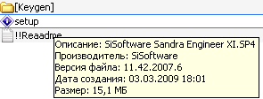
Рис.3.1
2. Выберите язык программы (рис. 3.2).
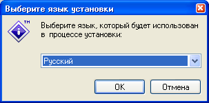
Рис. 3.2
3. При появлении окна приветствия (рис. 3.3), нажмите кнопку “Далее”
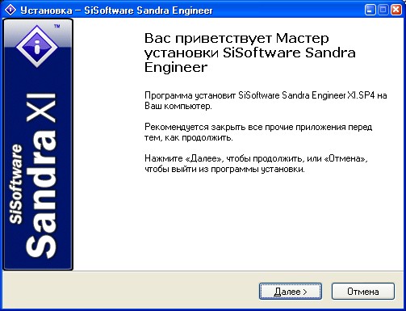
Рис. 3.3
4. В появившемся диалоговом окне (рис. 3.4) установите флажок “Я принимаю условия соглашения” и нажмите “Далее”
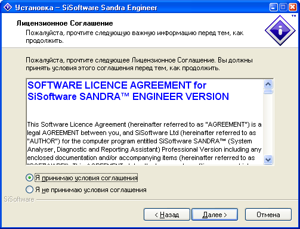
Рис. 3.4
5. Появится информационное окно (рис. 3.5). В нем содержится основная информация о данном программном продукте. Нажмите “Далее”.
Рис. 3.5
6. В появившемся окне (рис. 3.6) поля “Имя и фамилия пользователя” и “Организация” заполняться автоматически. Если необходимо измените содержания данных поле и нажмите “Далее”.
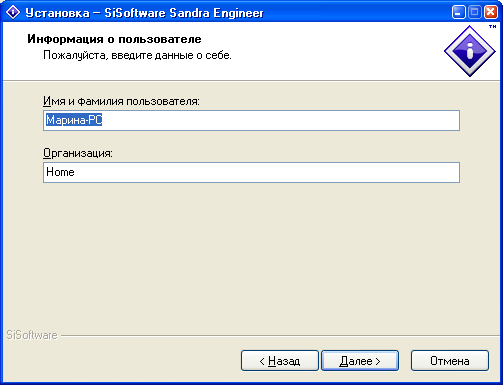
Рис. 3.6
7. Появится окно выбора типа платформы (рис. 3.7). Нажмите “Далее”.
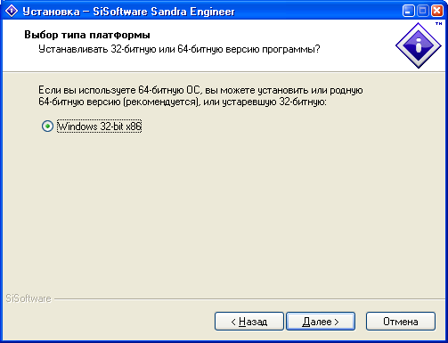
Рис. 3.7
8. В данном окне (рис. 3.8) вы можете выбрать тему, которую вы хотели бы использовать. Выберите тему и нажмите “Далее”.
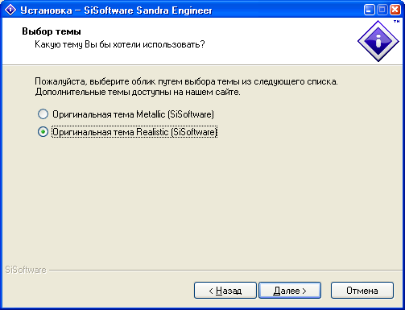
Рис. 3.8
9. Выберите папку для установки программы. Затем нажмите “Далее” (рис. 3.9).
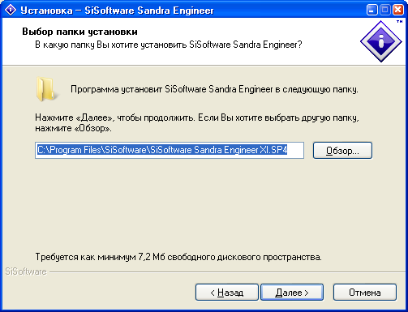
Рис. 3.9
10. Из списка в появившемся окне (рис. 3.10) выберите тип установки. Внизу окна указывается необходимый объем памяти для данного типа установки. Рекомендуется полная установка. Нажмите “Далее”.
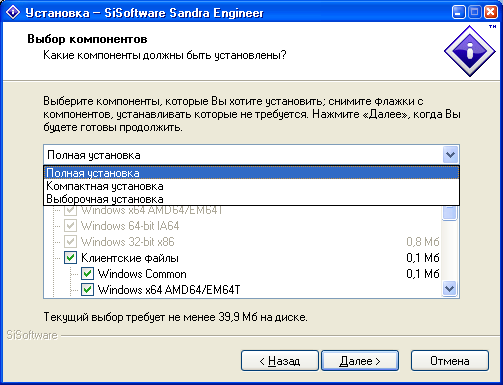
Рис. 3.10
11. В появившемся окне (рис. 3.11) укажите папку для создания ярлыка и нажмите “Далее”.
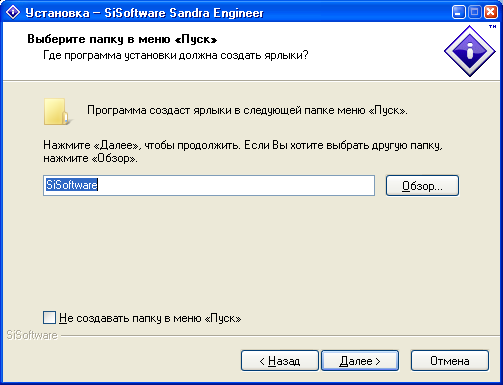
Рис. 3.11
12. Выберите дополнительные задачи (установите необходимые флажки) и нажмите “Далее” (рис. 3.12).

Рис. 3.12
13. Все готово к установке (рис. 3.13). Нажмите “Установить” , чтобы продолжить, или “Назад”, если Вы хотите просмотреть или изменить опции установки.
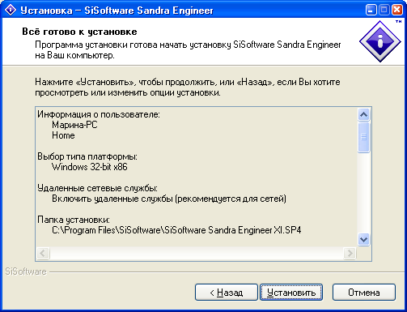
Рис. 3.13
14. Подождите пока программа установится на ваш компьютер (рис. 3.14).
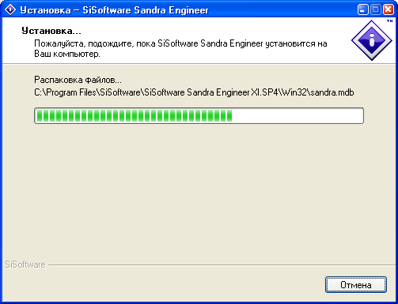
Рис. 3.14
15. Программа установлена на Ваш компьютер (рис. 3.15). Нажмите “Завершить”, чтобы выйти из программы установки.
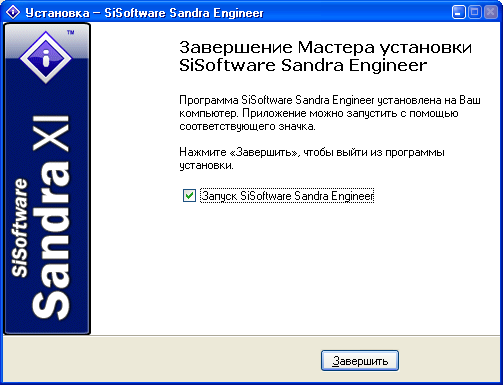
Рис. 3.15
ИНТЕРФЕЙС SISOFTAWARE SANDRA
Прежде чем приступить к исследованиям производительности выявим основные возможности данного приложения. Рассмотрим три основные вкладки главного окна программы: “Инструменты”, “Эталонные тесты” и “Устройства”.
1. ИНСТРУМЕНТЫ
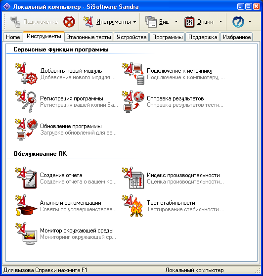
Рис. 3. 16
Область “Сервисные функции программы” (рис. 3. 16) позволяет выполнить следующие действия:
· Добавить новый модуль.
С помощью этого мастера вы можете анонимно передать ваши результаты тестирования и информацию о системе в SiSoftware. Никакая персональная информация о вас при этом не передается.
· Подключение к источнику.
Вы можете соединиться с вашим компьютером, мобильными устройствами (КПК, смартфон…), удаленным компьютером, базой данных, и даже с файлами отчета.
· Регистрация программы.
У вас есть возможность зарегистрироваться в качестве пользователя Sandra. Регистрация добровольная и не накладывает никаких обязательств. Отменить регистрацию можно в любой момент.
· Отправка результатов.
С помощью этого мастера вы можете анонимно передать ваши результаты тестирования и информацию о системе в SiSoftware. Никакая персональная информация о вас (имя, адрес, т.д.) не передается.
· Обновление программы.
Этот мастер автоматически соединяется с сервером и проверяет наличие обновлений для вашей версии программы. По вашему желанию, все обновления будут автоматически загружены и установлены.
В области “Обслуживание ПК” содержаться функции:
· Создание отчета.
Этот мастер позволяет собрать данные из всех доступных модулей и составить отчет в различных форматах. Отчет будет содержать уникальный идентификатор системы, используемый для группировки отчетов и определения его принадлежности.
· Индекс производительности.
Этот мастер выполняет определенные тесты и генерирует обобщенный комбинированный индекс для системы. С помощью матрицы соответствия можно быстро сравнить производительность системы с эталонными системами. Будет видно, в каких областях ваша система неэффективна, и что нужно модернизировать для достижения сбалансированности.
· Анализ и рекомендации.
Этот мастер запускает все активные модули и составляет список советов по оптимизации системы. Анализируются все активные тестовые и информационные модули.
· Тест стабильности.
Этот мастер поможет протестировать стабильность работы вашей системы путем непрерывного выполнения тестов, в том числе эталонных. Во время тестирования компоненты работают в предельных режимах. Любые непрочности и неполадки могут привести к ошибкам или даже вывести их из строя. Это не специализированный стресс-тест, а лишь способ непрерывного запуска тестов с тем, чтобы нагрузить систему.
· Монитор окружающей среды.
Этот мастер осуществляет мониторинг окружающей среды компьютера.
2. ЭТАЛОННЫЕ ТЕСТЫ
Эталонные тесты (рис. 3. 17) позволяю оценить производительность вашего компьютера. Существует возможность протестировать различные устройства.

Рис. 3. 17
На данной вкладке доступны следующие тесты:
· Арифметический тест.
Отображает производительность вашего процессора при выполнении арифметических вычислений и вычислений с плавающей запятой в сравнении с другими процессорами.
· Мультимедийный тест.
Отображает производительность вашего процессора при обработке мультимедийных инструкций и данных в сравнении с другими типичными системами.
· Многоядерная эффективность.
Отображает эффективность работы ядер процессора и межъядерных соединений в сравнении с другими типичными процессорами.
· Эффективность энергосбережения.
Отображает эффективность управления вашего процессора в сравнении с другими типичными процессорами.
· Производительность криптографии.
Показывает, насколько эффективно ваш компьютер обрабатывает криптографические задачи (шифрование, дешифрование, хэширование, цифровая подпись, и т.д.) в сравнении с другими системами.
· Арифметика .NET.
Показывает эффективность обработки арифметических задач .NET через .NET CLR в сравнении с другими типичными средами .NET CLR.
· Мультимедиа .NET.
Показывает эффективность обработки мультимедийных задач .NET через .NET CLR в сравнении с другими типичными средами .NET CLR.
· Арифметика Java.
· Мультимедиа Java.
· Рендеринг.
· Тест GPGPU.
· Память GPGPU.
· Файловые системы.
Отображает производительность файловых систем дисков, подключенных к вашему компьютеру, в сравнении с подобными устройствами других типичных систем.
· Физические диски.
Отображает производительность физических дисков, подключенных к вашему компьютеру, в сравнении с другими дисками в типичных системах.
· Съемные диски.
Отображает производительность съемных и флэш дисков в сравнении с подобными устройствами.
· Оптические приводы.
Отображает производительность приводов Blu-ray, (HD)DVD, CD-ROM в сравнении с другими подобными приводами в типичных системах.
· НМЛ и DAT.
· Пропускная способность памяти.
Отображает пропускную способность подсистем памяти в сравнении с другими компьютерами.
· Латентность памяти.
Отображает латентность процессорных кэшей и подсистем памяти в сравнении с другими компьютерами.
· Кэш и память.
Отображает скорость доступа к процессорным кэшам и подсистемам памяти в сравнении с другими компьютерами.
· Пропускная способность сети.
Отображает производительность ваших сетей/ЛВС, а также сетевых устройств и хвостов в сравнении с другими сетями/ хостами/ устройствами.
· Скорость беспроводных соединений.
· Интеренет-соединение.
Отображает скорость соединения вашего компьютера с сетью Интернет-провайдера в сравнении с другими типичными соединениями.
· Скорость Интеренет.
Отображает скорость соединения сети вашего Интернет-провайдера с другими сетями в Интеренет.
· Скорость передачи КПК.
3. УСТРОЙСТВА
На данной вкладке (рис. 3. 18) содержится информация о различных устройствах, например, таких как порты, материнская плата, принтеры и факсы, мыши и трекболы, клавиатуры, планшеты и другие.
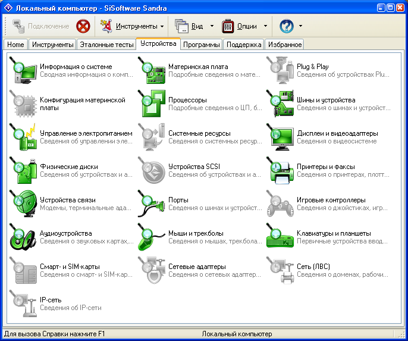
Рис. 3. 18
Вы можете узнать следующую информацию об устройствах:
· Информация о системе.
Сведения информации о конфигурации вашего компьютера. Подробнее сведения содержаться в других модулях.
· Конфигурация материнской платы.
· Управление электропитанием.
Сведения об энергосбережении вашего компьютера и связанных с ними настройках (AMP, ACPI, PMBus).
· Физические диски.
Информация о физических дисках, подключенных к этому компьютеру.
· Устройства связи.
Информация об устройствах связи (модемах/ терминальных адаптерах), подключенных к вашему компьютеру.
· Аудиоустройства.
Информация о звуковых картах и других аудиоустройствах, установленных в вашем компьютере.
· Смарт- и SIM-карты.
· IP-сеть.
· Материнская плата.
Информация о материнской плате, шасси, чипсете, шинах, системной памяти, кэш и подобных устройствах компьютера.
· Процессоры.
Информация о процессорах, FPU, кэш и связанных устройствах вашего компьютера.
· Системные ресурсы.
· Устройства SCSI.
· Порты.
Информация о параллельных портах (LPT), последовательных (COM), USB и 1394 порта вашего компьютера и об устройствах, подключенных к ним.
· Мыши и трекболы.
Информация о мышах, трекболах, перьях и других указательных устройствах, подключенных к вашему компьютеру.
· Сетевые адаптеры.
· Plug & Play
· Шины и устройства.
Информация об устройствах и картах, подключенных к шинам PCI(e), AGP и PC-Card.
· Дисплеи и видеоадаптеры.
Информация об установленных мониторах, видеоадаптерах и видеодрайверах.
· Принтеры и факсы.
Сведения о локальных и удаленных принтерах и факсах, доступных данному компьютеру.
· Игровые контроллеры.
· Клавиатуры и планшеты.
Информация о клавиатурах, планшетах и других первичных устройствах ввода, подключенных к вашему компьютеру.
· Сеть (ЛВС).
ЗАДАНИЯ ДЛЯ ВЫПОЛНЕНИЯ
1. Запустите SiSoftware Sandra. Перейдите на вкладку «Эталонные тесты». Запустите арифметический тест. Перед началом тестирования нажмите кнопку «Обновить».
Данный тест (рис. 3. 19) отображает производительность вашего процессора при выполнении арифметических вычислений и вычислений с плавающей запятой в сравнении с другими процессорами. Эталонные процессоры вы можете выбрать из списка.
Как мы уже знаем, производительность измеряется в MIPS — (миллион целочисленных команд в секунду). В общем случае MIPS есть скорость операций с целыми числами в единицу времени, т.е. для любой данной программы MIPS есть просто отношение количества команд в программе к времени ее выполнения. Таким образом, производительность может быть определена как обратная к времени выполнения величина, причем более быстрые машины при этом будут иметь более высокий рейтинг MIPS.
Обычно для научно-технических задач производительность процессора оценивается в MFLOPS (миллионах чисел-результатов вычислений с плавающей точкой в секунду, или миллионах элементарных арифметических операций над числами с плавающей точкой, выполненных в секунду). Он базируется на количестве выполняемых операций, а не на количестве выполняемых команд.
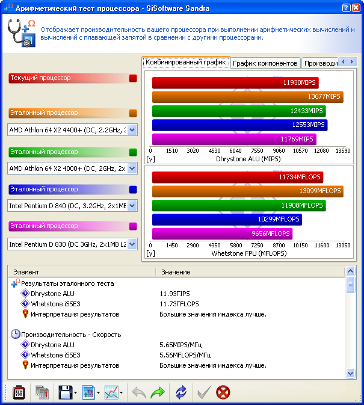
Рис. 3. 19
Комплект тестов Whetstone состоит из нескольких модулей, имитирующих программную нагрузку в наиболее типичных режимах исполнения вычислительных задач (целочисленная арифметика, арифметика с плавающей точкой, операторы типа IF, вызовы функций и т.д.). Каждый модуль выполняется многократно, в соответствии с исходной статистикой Whetstone-инструкций (практически это реализуется с помощью заключения модулей в циклические конструкции с разным числом "оборотов" цикла — от 12 до 899), а производительность рассчитывается как отношение числа Whetstone-инстpукций к суммарному времени выполнения всех модулей пакета. Этот результат представляется в KWIPS (Kilo Whetstone Instructions Per Second) или в MWIPS (Mega Whetstone Instructions Per Second). В известном смысле указанные единицы аналогичны MIPS, но с одной существенной оговоркой: Whetstone-инструкции не привязаны к системе команд какого-либо компьютера, т. е. оценка производительности в MWIPS является моделенезависимой.
Не случайно названия пакетов Dhrystone и Whetstone так созвучны (специалисты на своем жаргоне объединяют их термином Stone Age — ''каменный век''). Подобно пакету Whetstone, тесты Dhrystone являются синтетическими и основаны на типовом распределении языковых конструкций. Более того, в их оpганизации много общего: в состав Dhrystone включено 12 модулей, представляющих различные типовые режимы обработки. Однако тесты Dhrystone предназначены для оценки производительности другого рода — относящейся к функционированию конкретных видов системного и прикладного ПО (операционные системы, компиляторы, редакторы и т. д.).
Естественно, это наложило заметный отпечаток на структуру данных и исполнительного кода: в тестах Dhrystone отсутствует обработка чисел с плавающей точкой, зато преобладают операции над другими типами данных (символы, строки, логические переменные, указатели и т. п.). Кроме того, по сравнению с тестами Whetstone уменьшено количество циклических конструкций, используются более простые вычислительные выражения, но возросло число операторов IF и вызовов процедур.
При исследовании производительности ALU (измеряется производительность арифметико-логического блока процессора) используется единица измерения MIPS, а при исследовании производительность FPU (измеряется производительность при вычислениях с плавающей запятой) — MFLOPS.
Для симуляции нормальных нагрузок, таких как воспроизведение музыки/MP3, DVD/MPEG, как правило используется нагрузка ALU, в основе которой тест Dhrystone. Для симуляции научно-технических нагрузок используется нагрузка FPU, в основе которой тест Whetstone.
На комбинированном графике (рис.3. 19) видно, что производительность тестируемого (текущего) процессора (AMD Athlon (tm) 64 X2 Dual Core Processor 4000+) составляет 11930 MIPS. По сравнению с эталонными процессами тестируемый (текущий) — четвертый по производительности.
Проанализируйте результаты теста отображенные на комбинированном графике и графике компонентов (рис. 3. 20).
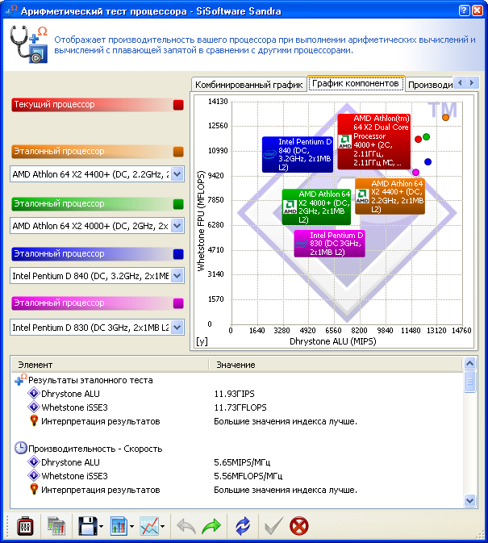
Рис. 3. 20
2. Запустите тест «Физические диски».
Данный тест отображает производительность физических дисков, подключенных к вашему компьютеру, в сравнении с другими дисками в типичных системах. Скорость чтения измеряется в Мб/с, а среднее время доступа в мс.
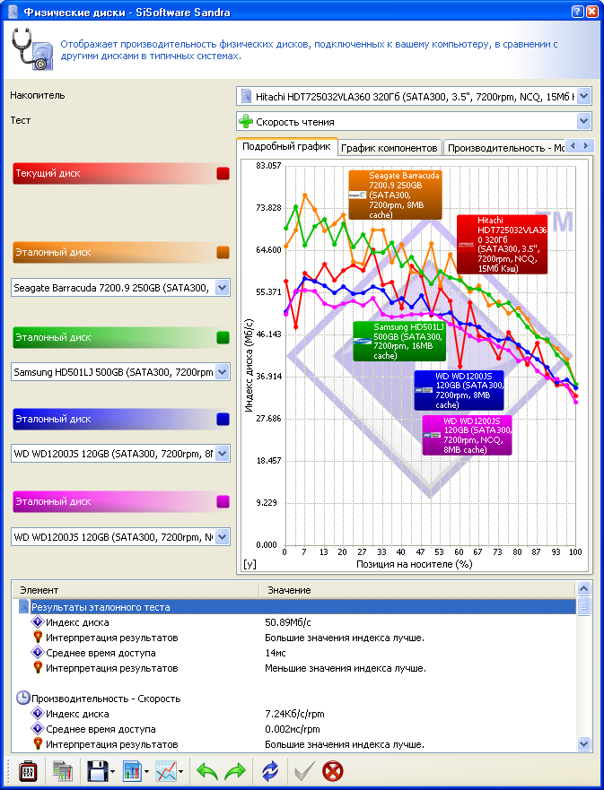
Рис. 3. 21
Изучите подробный график (рис. 3. 21) и график компонентов(рис. 3. 22). Как видим в нашем случае скорость чтения тестируемого (текущего) диска составляет 50,89 Мб/с, а среднее время доступа 14 мс. Проанализируйте результаты теста.
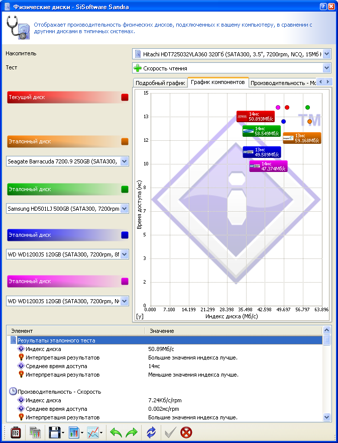
Рис. 3. 22
3. Запустите тест «Кэш и память».
Этот тест отображает скорость доступа к процессорным кэшам и подсистемам памяти в сравнении с другими компьютерами. Единицей измерения пропускной способности кэш/памяти является Гб/с, фактор скорости безразмерная величина. Подробный график (рис. 3. 23) отображает зависимость скорости передачи данных от величины блоков: чем меньше величина блоков, тем выше скорость передачи данных.
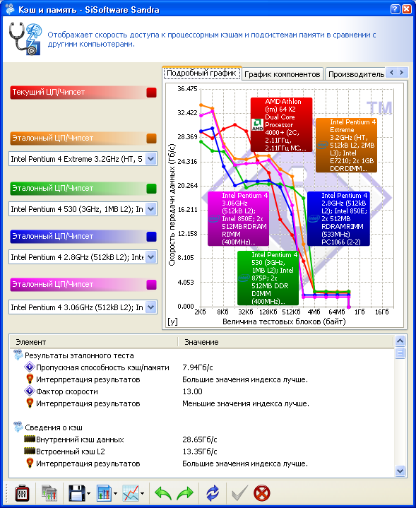
Рис. 3. 23
Пропускная способность кэш/памяти 7,94 Гб/с, фактор скорости 13 (рис. 3. 24).
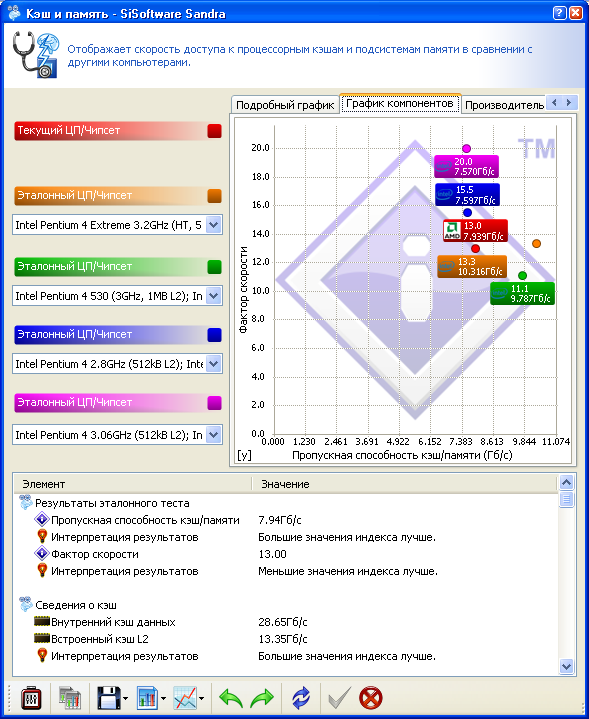
Рис. 3. 24
4. Выполните тест «Файловые системы».
Данный тест (рис. 3. 25) отображает производительности файловых систем дисков, подключенных к вашему компьютеру, в сравнении с подобными устройствами других типичных систем.
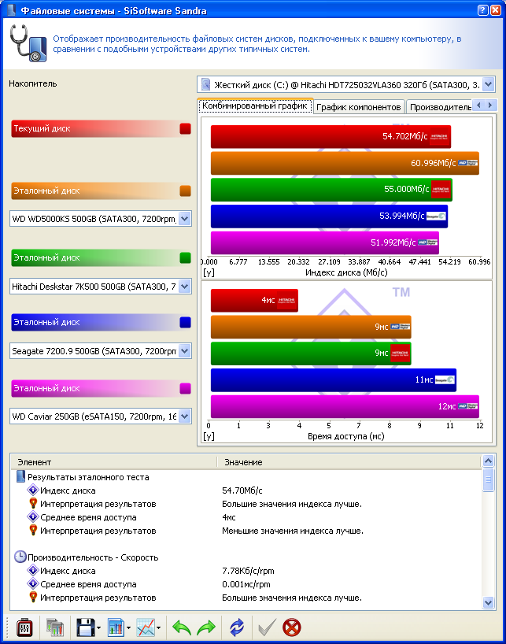
Рис. 3. 25
Протестировав диск С (рис. 3. 25), видим, что индекс диска (скорость диска) равен 54,702 Мб/с, а время доступа 4 мс.
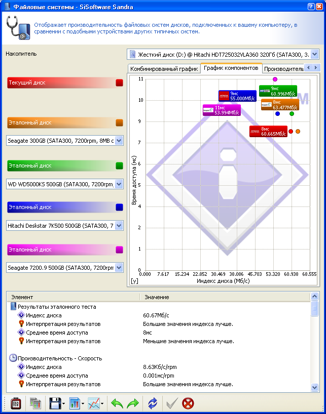
Рис. 3. 26
Результаты тестирования диска D (рис. 3. 26) показали, что индекс диска (скорость диска) составляет 60,67 Мб/с, а время доступа — 8 мс, что хуже аналогичных результатов эталонных дисков.
5. Перейдите на вкладку «Устройства» и выберите пункт «Информация о системе». Отобразится сводная информация о конфигурации вашего компьютера (рис. 3. 27). Изучите ее.
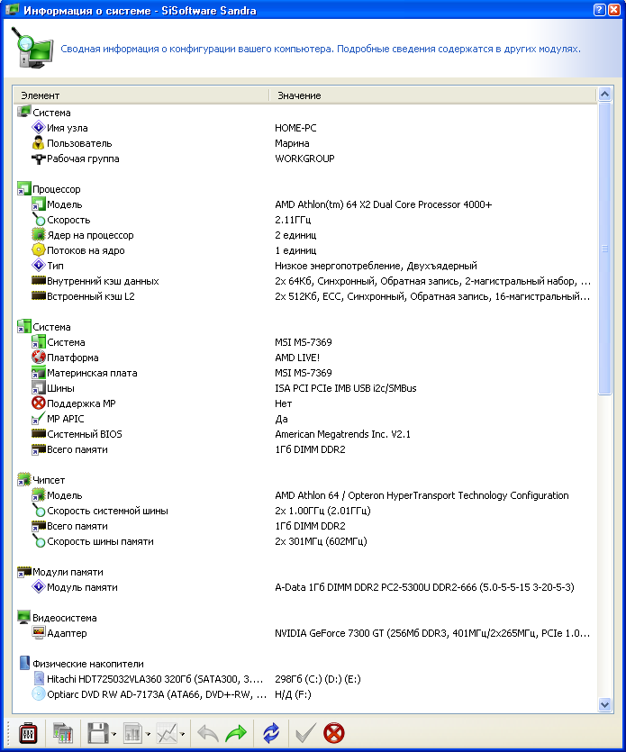
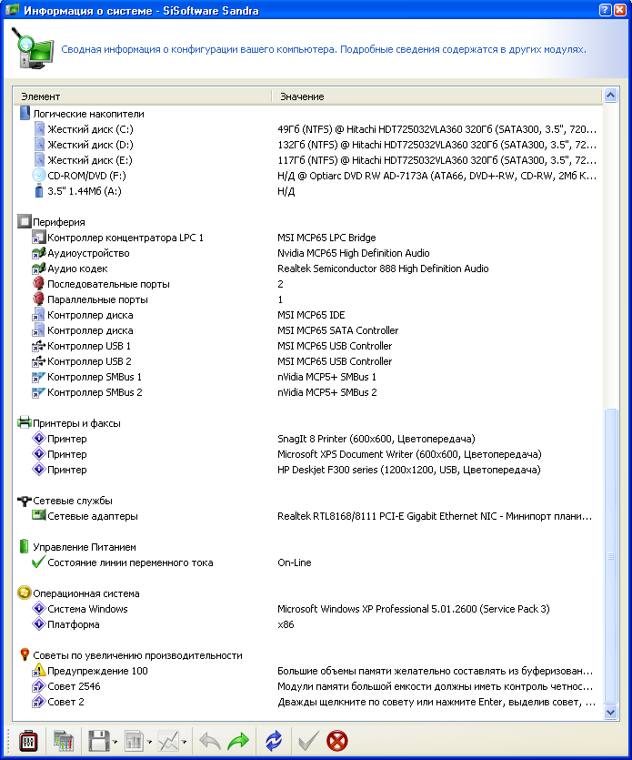
Рис. 3. 27
Сделайте выводы по
результатам лабораторной работы.
Контрольные вопросы
1. Назовите основные факторы, влияющие на производительность ВМ.
2. Какие существуют тесты для оценки производительности, в чем их отличие?
3. Как связана тактовая частота микропроцессора и производительность ВМ?
4. Что такое MIPS и MFLOPS? В чем их отличия?
5. Какая организация занимается разработкой тестовых программ?
6. Назовите два базовых набора тестов? В чем их отличия?
7. Чем занимается организация TPC?
8. Деятельность организации AIM.
9. В каких случаях используются тесты Whetstone?
10. В каких случаях используются тесты Dhrystone?